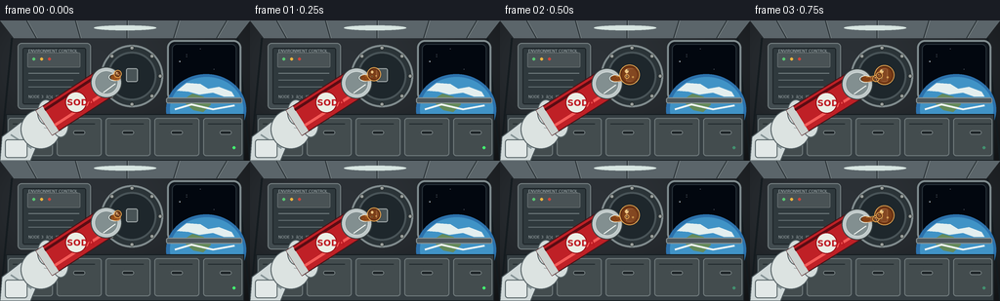
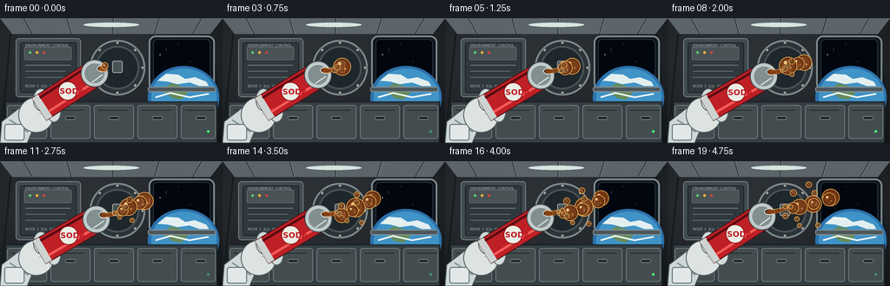
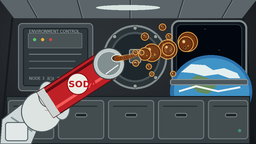

CODING AGENTS AS PIXEL WORLD MODELS
traex/GPT-5.6-Sol · phygen_005
点击播放 · 原生 RGB 像素
逐轮保存的候选
回放视频、检查图与代码变化。
每份候选均可单独播放。实际图片检查记录在下方工具轨迹中。
候选 01播放与检查图
点击播放 · 原生 RGB 像素


展开代码变化
--- 上一保存版本
+++ 本次保存版本
@@ -0,0 +1,216 @@
+from pathlib import Path
+import math
+import numpy as np
+from PIL import Image, ImageDraw, ImageFont, ImageFilter
+import artifact_io
+
+W,H,N = 256,144,20
+S=4
+rng=np.random.default_rng(8)
+try:
+ FONT=ImageFont.truetype('/usr/share/fonts/truetype/dejavu/DejaVuSans.ttf', 7*S)
+ FONTB=ImageFont.truetype('/usr/share/fonts/truetype/dejavu/DejaVuSans-Bold.ttf', 9*S)
+ FONTS=ImageFont.truetype('/usr/share/fonts/truetype/dejavu/DejaVuSans.ttf', 4*S)
+except:
+ FONT=FONTB=FONTS=None
+
+def scp(p): return tuple(int(round(v*S)) for v in p)
+def line(draw, pts, fill, width=1): draw.line([scp(p) for p in pts], fill=fill, width=max(1,int(width*S)), joint='curve')
+def poly(draw, pts, fill, outline=None, width=1):
+ draw.polygon([scp(p) for p in pts], fill=fill)
+ if outline: draw.line([scp(p) for p in pts+[pts[0]]],fill=outline,width=max(1,int(width*S)),joint='curve')
+def ell(draw, box, fill, outline=None, width=1): draw.ellipse(scp(box),fill=fill,outline=outline,width=max(1,int(width*S)))
+def rect(draw, box, fill, outline=None, width=1, radius=0):
+ if radius: draw.rounded_rectangle(scp(box),radius=int(radius*S),fill=fill,outline=outline,width=max(1,int(width*S)))
+ else: draw.rectangle(scp(box),fill=fill,outline=outline,width=max(1,int(width*S)))
+
+# stable star positions
+stars=[(rng.integers(0,256),rng.integers(0,70),rng.choice([1,1,1,2])) for _ in range(45)]
+
+def background(frame):
+ # metallic module with gentle vignette
+ yy,xx=np.mgrid[0:H*S,0:W*S]
+ base=np.zeros((H*S,W*S,3),dtype=np.float32)
+ g=38 + 18*(1-yy/(H*S)) + 5*np.cos(xx/(W*S)*math.pi)
+ base[:,:,0]=g*0.88; base[:,:,1]=g*0.98; base[:,:,2]=g*1.08
+ vign=np.clip(1-0.24*((xx-W*S/2)/(W*S/2))**2-0.18*((yy-H*S/2)/(H*S/2))**2,.62,1)
+ base*=vign[:,:,None]
+ im=Image.fromarray(np.uint8(np.clip(base,0,255)),'RGB').convert('RGBA'); d=ImageDraw.Draw(im)
+ # ceiling ribs and seams
+ poly(d,[(0,0),(256,0),(242,18),(14,18)],(91,101,106,255))
+ line(d,[(12,18),(0,144)],(20,27,31,255),2)
+ line(d,[(243,18),(256,144)],(19,26,30,255),2)
+ for x in [27,77,130,183,232]:
+ line(d,[(x,0),(x+(128-x)*.10,18)],(43,51,55,255),1)
+ line(d,[(x+1,0),(x+1+(128-x)*.10,18)],(130,140,142,90),.6)
+ # big observation window, right side
+ rect(d,(171,20,247,83),(15,21,28,255),(127,139,142,255),2,8)
+ rect(d,(176,24,242,78),(2,7,15,255),(40,50,58,255),1,5)
+ # stars
+ for x,y,r in stars:
+ if 178<x<241 and 25<y<77:
+ ell(d,(x-r*.25,y-r*.25,x+r*.25,y+r*.25),(205,224,238,210))
+ # Earth curved limb through window
+ ell(d,(170,55,252,128),(44,113,171,255))
+ ell(d,(174,58,249,124),(64,147,198,255))
+ # cloud swirls and continents, clipped visually by window boundaries mostly
+ poly(d,[(181,72),(191,64),(205,65),(213,70),(224,68),(237,73),(240,78),(229,78),(218,74),(204,76),(193,73)],(227,239,239,180))
+ poly(d,[(186,82),(197,75),(208,78),(216,86),(208,94),(198,92),(192,87)],(101,139,91,230))
+ line(d,[(179,91),(196,86),(218,91),(240,87)],(241,247,245,190),2.2)
+ # re-mask window outside lower edge with structure to keep it framed
+ rect(d,(170,79,248,85),(76,87,92,255),(137,147,148,255),1,2)
+ # center wall panels
+ rect(d,(18,23,93,91),(65,75,79,255),(117,127,129,255),1,4)
+ rect(d,(23,28,88,86),(47,57,61,255),(27,34,38,255),1,2)
+ # instrument box strips
+ rect(d,(28,33,82,48),(73,82,85,255),(120,128,129,255),.7,1)
+ for i,c in enumerate([(89,199,114,255),(235,178,62,255),(203,70,60,255)]):
+ ell(d,(33+i*8,38,36+i*8,41),c)
+ line(d,[(29,54),(81,54)],(113,124,127,255),1)
+ line(d,[(29,61),(75,61)],(96,108,111,255),1)
+ line(d,[(29,68),(78,68)],(96,108,111,255),1)
+ # panel labels
+ d.text(scp((29,29)),'ENVIRONMENT CONTROL',font=FONTS,fill=(180,190,191,255))
+ d.text(scp((29,76)),'NODE 3 ⢠ISS',font=FONTS,fill=(168,178,180,255))
+ # central hatch behind action
+ ell(d,(103,25,167,89),(43,52,56,255),(129,140,142,255),2)
+ ell(d,(110,32,160,82),(30,39,44,255),(73,84,88,255),2)
+ for a in range(0,360,45):
+ cx=135+29*math.cos(math.radians(a)); cy=57+29*math.sin(math.radians(a))
+ ell(d,(cx-2,cy-2,cx+2,cy+2),(154,159,155,255),(40,44,43,255),.6)
+ rect(d,(129,49,141,63),(72,83,86,255),(160,168,169,255),1,2)
+ # lower utility lockers
+ rect(d,(6,96,250,144),(53,62,66,255),(21,28,32,255),1)
+ for x in [8,58,108,158,208]:
+ rect(d,(x,100,min(x+46,248),139),(67,76,78,255),(111,121,123,255),1,3)
+ line(d,[(x+5,106),(x+39,106)],(33,42,45,255),1)
+ rect(d,(x+17,113,x+29,117),(31,38,41,255),(131,141,142,255),.8,2)
+ # warm cabin practical light
+ ell(d,(96,5,160,10),(215,229,225,90))
+ return im
+
+def draw_glove_and_can(im, frame):
+ d=ImageDraw.Draw(im,'RGBA')
+ # floating astronaut glove gripping lower can
+ # cuff
+ poly(d,[(2,119),(24,102),(43,116),(31,144),(0,144)],(207,216,216,255),(72,83,87,255),1.2)
+ line(d,[(11,117),(32,131)],(132,147,150,255),2)
+ rect(d,(5,122,28,141),(226,232,231,255),(91,103,106,255),1,3)
+ # glove palm
+ ell(d,(21,91,62,132),(220,227,225,255),(80,92,96,255),1.2)
+ # segmented fingers curling around can
+ for box in [(38,81,56,107),(45,84,64,109),(51,89,69,113),(54,97,70,120)]:
+ ell(d,box,(211,220,219,255),(86,99,102,255),1)
+ for y in [96,103,110]: line(d,[(45,y),(63,y+3)],(137,151,153,210),.8)
+ # Can axis from base to top; subtle slow roll
+ ang=math.radians(-33 + 3*math.sin(frame/19*math.pi))
+ ux,uy=math.cos(ang),math.sin(ang); px,py=-uy,ux
+ bx,by=45,105; L=76; rad=15
+ tx,ty=bx+L*ux,by+L*uy
+ pts=[(bx+rad*px,by+rad*py),(tx+rad*px,ty+rad*py),(tx-rad*px,ty-rad*py),(bx-rad*px,by-rad*py)]
+ poly(d,pts,(191,32,38,255),(74,20,24,255),1.2)
+ # metallic rim stripes
+ poly(d,[(bx+rad*px,by+rad*py),(bx+8*ux+rad*px,by+8*uy+rad*py),(bx+8*ux-rad*px,by+8*uy-rad*py),(bx-rad*px,by-rad*py)],(205,211,208,255))
+ # red can highlights/shadows
+ line(d,[(bx+8*ux+8*px,by+8*uy+8*py),(tx-4*ux+8*px,ty-4*uy+8*py)],(245,91,88,190),3)
+ line(d,[(bx+8*ux-11*px,by+8*uy-11*py),(tx-4*ux-11*px,ty-4*uy-11*py)],(91,12,19,210),3)
+ # logo disc
+ cx,cy=bx+39*ux,by+39*uy
+ ell(d,(cx-11,cy-11,cx+11,cy+11),(235,238,229,245),(150,15,22,255),1)
+ d.text((int((cx-9)*S),int((cy-5)*S)),'SODA',font=FONTB,fill=(190,26,34,255))
+ # top elliptical lid approximated circle due camera
+ ell(d,(tx-rad-1,ty-rad-1,tx+rad+1,ty+rad+1),(192,201,201,255),(57,66,67,255),1.2)
+ ell(d,(tx-rad+3,ty-rad+3,tx+rad-3,ty+rad-3),(130,143,144,255),(227,234,232,255),.7)
+ # top highlights and tab/opening on forward side
+ line(d,[(tx-8*ux+7*px,ty-8*uy+7*py),(tx+7*ux+6*px,ty+7*uy+6*py)],(237,242,239,220),1)
+ mouthx,mouthy=tx+10*ux,ty+10*uy
+ ell(d,(mouthx-6,mouthy-3.8,mouthx+6,mouthy+3.8),(27,28,25,255),(231,235,226,255),1)
+ ell(d,(mouthx-3,mouthy-1.7,mouthx+4,mouthy+1.7),(60,31,17,255))
+ return (mouthx,mouthy),(ux,uy),(px,py)
+
+def cola_blob(layer, cx,cy,r, seed, alpha=240, elongated=None):
+ d=ImageDraw.Draw(layer,'RGBA')
+ # translucent outer meniscus
+ if elongated:
+ rx,ry=elongated
+ else: rx=ry=r
+ ell(d,(cx-rx-1.2,cy-ry-1.2,cx+rx+1.2,cy+ry+1.2),(104,48,18,min(alpha,145)),(234,164,75,min(255,alpha)),1)
+ ell(d,(cx-rx,cy-ry,cx+rx,cy+ry),(121,55,17,alpha),(73,29,10,min(255,alpha)),.7)
+ # warmer inner translucent volume
+ ell(d,(cx-rx*.78,cy-ry*.78,cx+rx*.78,cy+ry*.78),(150,68,17,min(alpha,185)))
+ # specular crescent/dots
+ ell(d,(cx-rx*.54,cy-ry*.62,cx-rx*.12,cy-ry*.18),(255,211,138,min(alpha,225)))
+ ell(d,(cx+rx*.25,cy+ry*.15,cx+rx*.48,cy+ry*.38),(245,168,70,min(alpha,180)))
+ # trapped carbonation bubbles deterministic
+ rr=np.random.default_rng(seed)
+ count=max(1,int(r/3))
+ for _ in range(count):
+ a=rr.uniform(0,math.tau); q=rr.uniform(.15,.63)
+ x=cx+math.cos(a)*rx*q; y=cy+math.sin(a)*ry*q
+ br=rr.uniform(.45,1.15)
+ ell(d,(x-br,y-br,x+br,y+br),(116,48,14,80),(249,198,111,210),.45)
+
+def draw_liquid(im, frame, mouth, u, p):
+ # soft shadow behind liquid
+ liquid=Image.new('RGBA',im.size,(0,0,0,0))
+ d=ImageDraw.Draw(liquid,'RGBA')
+ t=frame/19
+ mx,my=mouth
+ # coherent emerging neck length grows early, then pulses
+ neck=5+15*min(1,frame/5)+2*math.sin(frame*.8)
+ # direction slightly above mouth axis, in zero-g
+ dx,dy=.97,-.23
+ # neck as tapered chain, showing a free-floating fluid bridge
+ steps=12
+ for k in range(steps):
+ q=k/(steps-1)
+ x=mx+dx*neck*q + math.sin(frame*.55+q*4)*1.1*q
+ y=my+dy*neck*q + math.sin(q*math.pi)*1.6
+ r=(4.7*(1-q)+2.4*q)*(0.85+0.08*math.sin(frame*.9))
+ ell(d,(x-r,y-r*.72,x+r,y+r*.72),(126,56,16,225),(237,146,57,210),.45)
+ # bright glints on bridge
+ line(d,[(mx+1,my-2),(mx+dx*neck*.75,my+dy*neck*.75-1)],(255,200,107,190),.8)
+ # Primary large globules: born successively and cruise freely (no falling)
+ births=[0,3,6,9,12,15]
+ sizes=[8.5,6.7,9.3,5.6,7.7,5.0]
+ speeds=[3.05,3.5,2.85,3.8,3.0,3.4]
+ for i,b in enumerate(births):
+ age=frame-b
+ if age<0: continue
+ # begin at neck tip, drift radially into cabin
+ x=mx+dx*(neck*.7 + age*speeds[i])
+ y=my+dy*(neck*.6 + age*speeds[i]) + math.sin(age*.38+i*1.7)*3.2 + (i-2.2)*1.25
+ grow=min(1,(age+1)/3)
+ r=sizes[i]*grow*(1+.07*math.sin(age*.7+i))
+ cola_blob(liquid,x,y,r,90+i,alpha=235)
+ # small satellite droplets peel away due to surface tension
+ births2=[2,4,7,8,11,13,14,16,17]
+ for j,b in enumerate(births2):
+ age=frame-b
+ if age<0: continue
+ theta=[-.72,.38,-.46,.67,-.9,.48,-.28,.82,-.58][j]
+ speed=2.6+(j%3)*.55
+ x=mx+12+age*speed*math.cos(theta)
+ y=my-2+age*speed*math.sin(theta)
+ r=[2.4,1.7,2.1,1.4,2.8,1.8,1.5,2.2,1.6][j]*min(1,(age+1)/2)
+ cola_blob(liquid,x,y,r,200+j,alpha=225)
+ # composite subtle glow and crisp layer
+ glow=liquid.filter(ImageFilter.GaussianBlur(2.0*S))
+ # low opacity glow
+ glow.putalpha(glow.getchannel('A').point(lambda a:int(a*.18)))
+ im.alpha_composite(glow)
+ im.alpha_composite(liquid)
+
+
+def frame_image(i):
+ im=background(i)
+ mouth,u,p=draw_glove_and_can(im,i)
+ draw_liquid(im,i,mouth,u,p)
+ # foreground fine panel edge and subtle time-varying status LED
+ d=ImageDraw.Draw(im,'RGBA')
+ ell(d,(238,129,241,132),(66,245 if i%4<2 else 145,112,255))
+ # downsample antialiased
+ return np.asarray(im.convert('RGB').resize((W,H),Image.Resampling.LANCZOS),dtype=np.uint8)
+
+frames=np.stack([frame_image(i) for i in range(N)])
+artifact_io.save(frames,Path(__file__).resolve().parent)
可观测工具轨迹
实际执行的命令与返回图片。
命令 1exit 0
/bin/bash -lc "cat prompt.txt && printf '\\n--- GENERATION_RULES.md ---\\n' && cat GENERATION_RULES.md && printf '\\n--- task_spec.json ---\\n' && cat task_spec.json"
命令 2exit 0
/bin/bash -lc "find . -maxdepth 2 -type f -printf '%p\\n' | sort && printf '\\n--- binaries ---\\n' && command -v ffmpeg || true && command -v python3 || true && command -v blender || true"
命令 3exit 0
/bin/bash -lc 'cat artifact_io.py'
命令 4exit 0
/bin/bash -lc "cat > generate.py <<'PY'
from pathlib import Path
import math
import numpy as np
from PIL import Image, ImageDraw, ImageFont, ImageFilter
import artifact_io
W,H,N = 256,144,20
S=4
rng=np.random.default_rng(8)
try:
FONT=ImageFont.truetype('/usr/share/fonts/truetype/dejavu/DejaVuSans.ttf', 7*S)
FONTB=ImageFont.truetype('/usr/share/fonts/truetype/dejavu/DejaVuSans-Bold.ttf', 9*S)
FONTS=ImageFont.truetype('/usr/share/fonts/truetype/dejavu/DejaVuSans.ttf', 4*S)
except:
FONT=FONTB=FONTS=None
def scp(p): return tuple(int(round(v*S)) for v in p)
def line(draw, pts, fill, width=1): draw.line([scp(p) for p in pts], fill=fill, width=max(1,int(width*S)), joint='curve')
def poly(draw, pts, fill, outline=None, width=1):
draw.polygon([scp(p) for p in pts], fill=fill)
if outline: draw.line([scp(p) for p in pts+[pts[0]]],fill=outline,width=max(1,int(width*S)),joint='curve')
def ell(draw, box, fill, outline=None, width=1): draw.ellipse(scp(box),fill=fill,outline=outline,width=max(1,int(width*S)))
def rect(draw, box, fill, outline=None, width=1, radius=0):
if radius: draw.rounded_rectangle(scp(box),radius=int(radius*S),fill=fill,outline=outline,width=max(1,int(width*S)))
else: draw.rectangle(scp(box),fill=fill,outline=outline,width=max(1,int(width*S)))
# stable star positions
stars=[(rng.integers(0,256),rng.integers(0,70),rng.choice([1,1,1,2])) for _ in range(45)]
def background(frame):
# metallic module with gentle vignette
yy,xx=np.mgrid[0:H*S,0:W*S]
base=np.zeros((H*S,W*S,3),dtype=np.float32)
g=38 + 18*(1-yy/(H*S)) + 5*np.cos(xx/(W*S)*math.pi)
base[:,:,0]=g*0.88; base[:,:,1]=g*0.98; base[:,:,2]=g*1.08
vign=np.clip(1-0.24*((xx-W*S/2)/(W*S/2))**2-0.18*((yy-H*S/2)/(H*S/2))**2,.62,1)
base*=vign[:,:,None]
im=Image.fromarray(np.uint8(np.clip(base,0,255)),'RGB').convert('RGBA'); d=ImageDraw.Draw(im)
# ceiling ribs and seams
poly(d,[(0,0),(256,0),(242,18),(14,18)],(91,101,106,255))
line(d,[(12,18),(0,144)],(20,27,31,255),2)
line(d,[(243,18),(256,144)],(19,26,30,255),2)
for x in [27,77,130,183,232]:
line(d,[(x,0),(x+(128-x)*.10,18)],(43,51,55,255),1)
line(d,[(x+1,0),(x+1+(128-x)*.10,18)],(130,140,142,90),.6)
# big observation window, right side
rect(d,(171,20,247,83),(15,21,28,255),(127,139,142,255),2,8)
rect(d,(176,24,242,78),(2,7,15,255),(40,50,58,255),1,5)
# stars
for x,y,r in stars:
if 178<x<241 and 25<y<77:
ell(d,(x-r*.25,y-r*.25,x+r*.25,y+r*.25),(205,224,238,210))
# Earth curved limb through window
ell(d,(170,55,252,128),(44,113,171,255))
ell(d,(174,58,249,124),(64,147,198,255))
# cloud swirls and continents, clipped visually by window boundaries mostly
poly(d,[(181,72),(191,64),(205,65),(213,70),(224,68),(237,73),(240,78),(229,78),(218,74),(204,76),(193,73)],(227,239,239,180))
poly(d,[(186,82),(197,75),(208,78),(216,86),(208,94),(198,92),(192,87)],(101,139,91,230))
line(d,[(179,91),(196,86),(218,91),(240,87)],(241,247,245,190),2.2)
# re-mask window outside lower edge with structure to keep it framed
rect(d,(170,79,248,85),(76,87,92,255),(137,147,148,255),1,2)
# center wall panels
rect(d,(18,23,93,91),(65,75,79,255),(117,127,129,255),1,4)
rect(d,(23,28,88,86),(47,57,61,255),(27,34,38,255),1,2)
# instrument box strips
rect(d,(28,33,82,48),(73,82,85,255),(120,128,129,255),.7,1)
for i,c in enumerate([(89,199,114,255),(235,178,62,255),(203,70,60,255)]):
ell(d,(33+i*8,38,36+i*8,41),c)
line(d,[(29,54),(81,54)],(113,124,127,255),1)
line(d,[(29,61),(75,61)],(96,108,111,255),1)
line(d,[(29,68),(78,68)],(96,108,111,255),1)
# panel labels
d.text(scp((29,29)),'ENVIRONMENT CONTROL',font=FONTS,fill=(180,190,191,255))
d.text(scp((29,76)),'NODE 3 ⢠ISS',font=FONTS,fill=(168,178,180,255))
# central hatch behind action
ell(d,(103,25,167,89),(43,52,56,255),(129,140,142,255),2)
ell(d,(110,32,160,82),(30,39,44,255),(73,84,88,255),2)
for a in range(0,360,45):
cx=135+29*math.cos(math.radians(a)); cy=57+29*math.sin(math.radians(a))
ell(d,(cx-2,cy-2,cx+2,cy+2),(154,159,155,255),(40,44,43,255),.6)
rect(d,(129,49,141,63),(72,83,86,255),(160,168,169,255),1,2)
# lower utility lockers
rect(d,(6,96,250,144),(53,62,66,255),(21,28,32,255),1)
for x in [8,58,108,158,208]:
rect(d,(x,100,min(x+46,248),139),(67,76,78,255),(111,121,123,255),1,3)
line(d,[(x+5,106),(x+39,106)],(33,42,45,255),1)
rect(d,(x+17,113,x+29,117),(31,38,41,255),(131,141,142,255),.8,2)
# warm cabin practical light
ell(d,(96,5,160,10),(215,229,225,90))
return im
def draw_glove_and_can(im, frame):
d=ImageDraw.Draw(im,'RGBA')
# floating astronaut glove gripping lower can
# cuff
poly(d,[(2,119),(24,102),(43,116),(31,144),(0,144)],(207,216,216,255),(72,83,87,255),1.2)
line(d,[(11,117),(32,131)],(132,147,150,255),2)
rect(d,(5,122,28,141),(226,232,231,255),(91,103,106,255),1,3)
# glove palm
ell(d,(21,91,62,132),(220,227,225,255),(80,92,96,255),1.2)
# segmented fingers curling around can
for box in [(38,81,56,107),(45,84,64,109),(51,89,69,113),(54,97,70,120)]:
ell(d,box,(211,220,219,255),(86,99,102,255),1)
for y in [96,103,110]: line(d,[(45,y),(63,y+3)],(137,151,153,210),.8)
# Can axis from base to top; subtle slow roll
ang=math.radians(-33 + 3*math.sin(frame/19*math.pi))
ux,uy=math.cos(ang),math.sin(ang); px,py=-uy,ux
bx,by=45,105; L=76; rad=15
tx,ty=bx+L*ux,by+L*uy
pts=[(bx+rad*px,by+rad*py),(tx+rad*px,ty+rad*py),(tx-rad*px,ty-rad*py),(bx-rad*px,by-rad*py)]
poly(d,pts,(191,32,38,255),(74,20,24,255),1.2)
# metallic rim stripes
poly(d,[(bx+rad*px,by+rad*py),(bx+8*ux+rad*px,by+8*uy+rad*py),(bx+8*ux-rad*px,by+8*uy-rad*py),(bx-rad*px,by-rad*py)],(205,211,208,255))
# red can highlights/shadows
line(d,[(bx+8*ux+8*px,by+8*uy+8*py),(tx-4*ux+8*px,ty-4*uy+8*py)],(245,91,88,190),3)
line(d,[(bx+8*ux-11*px,by+8*uy-11*py),(tx-4*ux-11*px,ty-4*uy-11*py)],(91,12,19,210),3)
# logo disc
cx,cy=bx+39*ux,by+39*uy
ell(d,(cx-11,cy-11,cx+11,cy+11),(235,238,229,245),(150,15,22,255),1)
d.text((int((cx-9)*S),int((cy-5)*S)),'SODA',font=FONTB,fill=(190,26,34,255))
# top elliptical lid approximated circle due camera
ell(d,(tx-rad-1,ty-rad-1,tx+rad+1,ty+rad+1),(192,201,201,255),(57,66,67,255),1.2)
ell(d,(tx-rad+3,ty-rad+3,tx+rad-3,ty+rad-3),(130,143,144,255),(227,234,232,255),.7)
# top highlights and tab/opening on forward side
line(d,[(tx-8*ux+7*px,ty-8*uy+7*py),(tx+7*ux+6*px,ty+7*uy+6*py)],(237,242,239,220),1)
mouthx,mouthy=tx+10*ux,ty+10*uy
ell(d,(mouthx-6,mouthy-3.8,mouthx+6,mouthy+3.8),(27,28,25,255),(231,235,226,255),1)
ell(d,(mouthx-3,mouthy-1.7,mouthx+4,mouthy+1.7),(60,31,17,255))
return (mouthx,mouthy),(ux,uy),(px,py)
def cola_blob(layer, cx,cy,r, seed, alpha=240, elongated=None):
d=ImageDraw.Draw(layer,'RGBA')
# translucent outer meniscus
if elongated:
rx,ry=elongated
else: rx=ry=r
ell(d,(cx-rx-1.2,cy-ry-1.2,cx+rx+1.2,cy+ry+1.2),(104,48,18,min(alpha,145)),(234,164,75,min(255,alpha)),1)
ell(d,(cx-rx,cy-ry,cx+rx,cy+ry),(121,55,17,alpha),(73,29,10,min(255,alpha)),.7)
# warmer inner translucent volume
ell(d,(cx-rx*.78,cy-ry*.78,cx+rx*.78,cy+ry*.78),(150,68,17,min(alpha,185)))
# specular crescent/dots
ell(d,(cx-rx*.54,cy-ry*.62,cx-rx*.12,cy-ry*.18),(255,211,138,min(alpha,225)))
ell(d,(cx+rx*.25,cy+ry*.15,cx+rx*.48,cy+ry*.38),(245,168,70,min(alpha,180)))
# trapped carbonation bubbles deterministic
rr=np.random.default_rng(seed)
count=max(1,int(r/3))
for _ in range(count):
a=rr.uniform(0,math.tau); q=rr.uniform(.15,.63)
x=cx+math.cos(a)*rx*q; y=cy+math.sin(a)*ry*q
br=rr.uniform(.45,1.15)
ell(d,(x-br,y-br,x+br,y+br),(116,48,14,80),(249,198,111,210),.45)
def draw_liquid(im, frame, mouth, u, p):
# soft shadow behind liquid
liquid=Image.new('RGBA',im.size,(0,0,0,0))
d=ImageDraw.Draw(liquid,'RGBA')
t=frame/19
mx,my=mouth
# coherent emerging neck length grows early, then pulses
neck=5+15*min(1,frame/5)+2*math.sin(frame*.8)
# direction slightly above mouth axis, in zero-g
dx,dy=.97,-.23
# neck as tapered chain, showing a free-floating fluid bridge
steps=12
for k in range(steps):
q=k/(steps-1)
x=mx+dx*neck*q + math.sin(frame*.55+q*4)*1.1*q
y=my+dy*neck*q + math.sin(q*math.pi)*1.6
r=(4.7*(1-q)+2.4*q)*(0.85+0.08*math.sin(frame*.9))
ell(d,(x-r,y-r*.72,x+r,y+r*.72),(126,56,16,225),(237,146,57,210),.45)
# bright glints on bridge
line(d,[(mx+1,my-2),(mx+dx*neck*.75,my+dy*neck*.75-1)],(255,200,107,190),.8)
# Primary large globules: born successively and cruise freely (no falling)
births=[0,3,6,9,12,15]
sizes=[8.5,6.7,9.3,5.6,7.7,5.0]
speeds=[3.05,3.5,2.85,3.8,3.0,3.4]
for i,b in enumerate(births):
age=frame-b
if age<0: continue
# begin at neck tip, drift radially into cabin
x=mx+dx*(neck*.7 + age*speeds[i])
y=my+dy*(neck*.6 + age*speeds[i]) + math.sin(age*.38+i*1.7)*3.2 + (i-2.2)*1.25
grow=min(1,(age+1)/3)
r=sizes[i]*grow*(1+.07*math.sin(age*.7+i))
cola_blob(liquid,x,y,r,90+i,alpha=235)
# small satellite droplets peel away due to surface tension
births2=[2,4,7,8,11,13,14,16,17]
for j,b in enumerate(births2):
age=frame-b
if age<0: continue
theta=[-.72,.38,-.46,.67,-.9,.48,-.28,.82,-.58][j]
speed=2.6+(j%3)*.55
x=mx+12+age*speed*math.cos(theta)
y=my-2+age*speed*math.sin(theta)
r=[2.4,1.7,2.1,1.4,2.8,1.8,1.5,2.2,1.6][j]*min(1,(age+1)/2)
cola_blob(liquid,x,y,r,200+j,alpha=225)
# composite subtle glow and crisp layer
glow=liquid.filter(ImageFilter.GaussianBlur(2.0*S))
# low opacity glow
glow.putalpha(glow.getchannel('A').point(lambda a:int(a*.18)))
im.alpha_composite(glow)
im.alpha_composite(liquid)
def frame_image(i):
im=background(i)
mouth,u,p=draw_glove_and_can(im,i)
draw_liquid(im,i,mouth,u,p)
# foreground fine panel edge and subtle time-varying status LED
d=ImageDraw.Draw(im,'RGBA')
ell(d,(238,129,241,132),(66,245 if i%4<2 else 145,112,255))
# downsample antialiased
return np.asarray(im.convert('RGB').resize((W,H),Image.Resampling.LANCZOS),dtype=np.uint8)
frames=np.stack([frame_image(i) for i in range(N)])
artifact_io.save(frames,Path(__file__).resolve().parent)
PY
python3 generate.py"命令 5exit 0
/bin/bash -lc "python3 - <<'PY'
import numpy as np
from PIL import Image
p=np.load('pixels.npz')['pixels']
print('pixels',p.shape,p.dtype,'unique',len(np.unique(p)))
ims=[np.asarray(Image.open(f'frames/{i:02d}.png')) for i in range(20)]
a=np.stack(ims)
print('frames',a.shape,a.dtype,'mean abs deltas',np.mean(np.abs(np.diff(a.astype(float),axis=0)),axis=(1,2,3)).round(2))
PY
ls -lh pixels.npz index.html inspection.png frames/19.png"视觉工具实际返回图片 1

视觉工具实际返回图片 2

保存候选 1 份；完成命令 5 次；可验证图片返回 2 张。原始 API 响应与完整日志保留在本地。